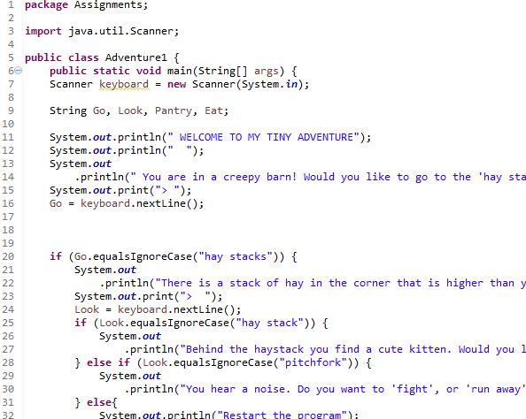
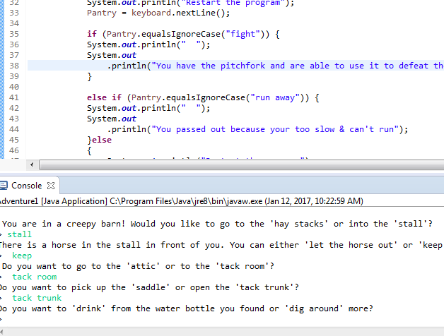

Java Content
In this Java Unit we learned the basic concepts of how to program with Java. We learned how to complete syntax output statements as well as input and else/if statements. Through our Java Adventure project, we were able to learn the concept of where to put curly braces and how to organize code in Java to make it easy to keep track of. In the adventure project we created a story that gave the user 4 or more sets of choices in order to get a combination of endings to the adventure. We had to also create a Tree Diagram to further help with organization.
Adventure Story Game

